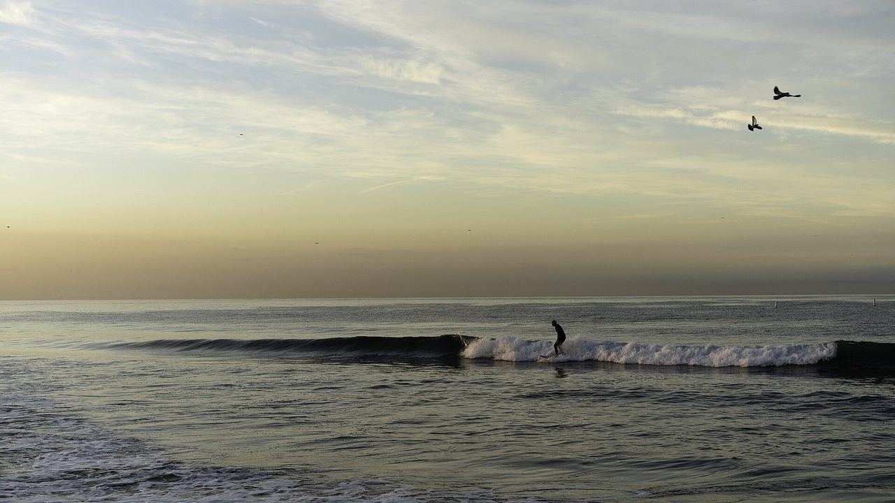

Race, Santa Monica Pier

Behind
Best +0:01
371W
Target 418 W-47 W
- Cadence
- 87rpm
- Heart
- 140bpm
- Speed
- 26.5km/h
Work4 of 14
0:59
Next: · 1:00 at level 24
+0.0%
1 m climbed
3.21 km
19
Resistance / 32
Solo races your best-time ghost: position reads Ahead or Behind, and solo alone gets a Pause button. Frozen at 7:31.